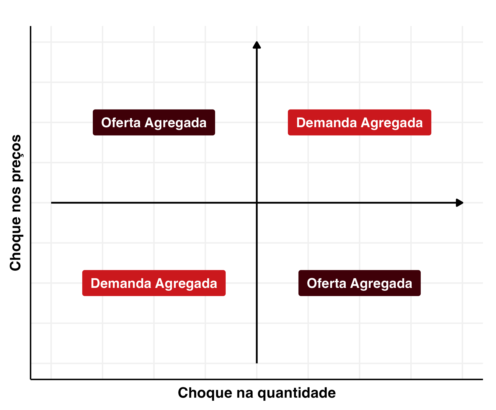
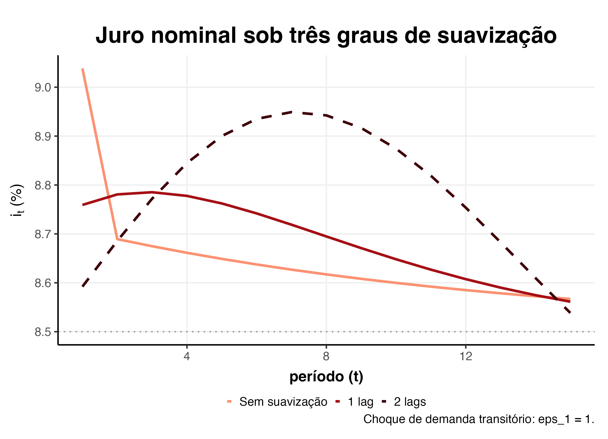
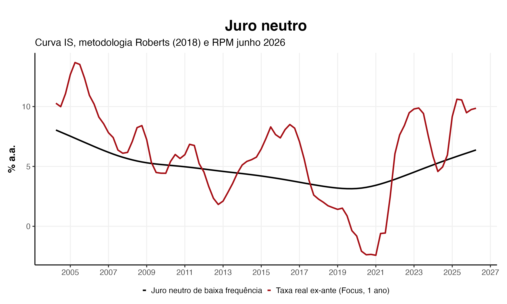
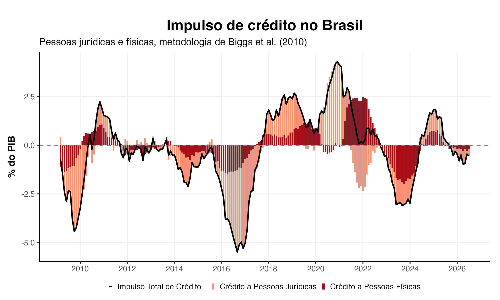
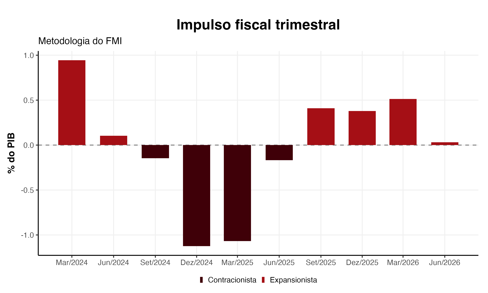
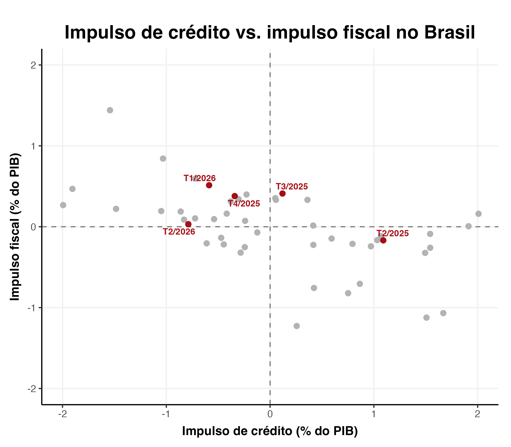
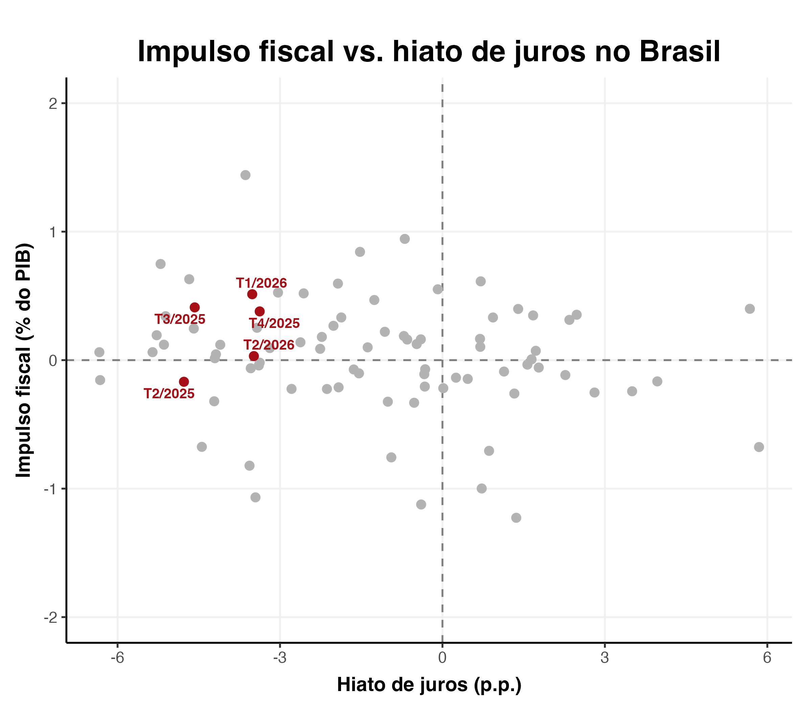
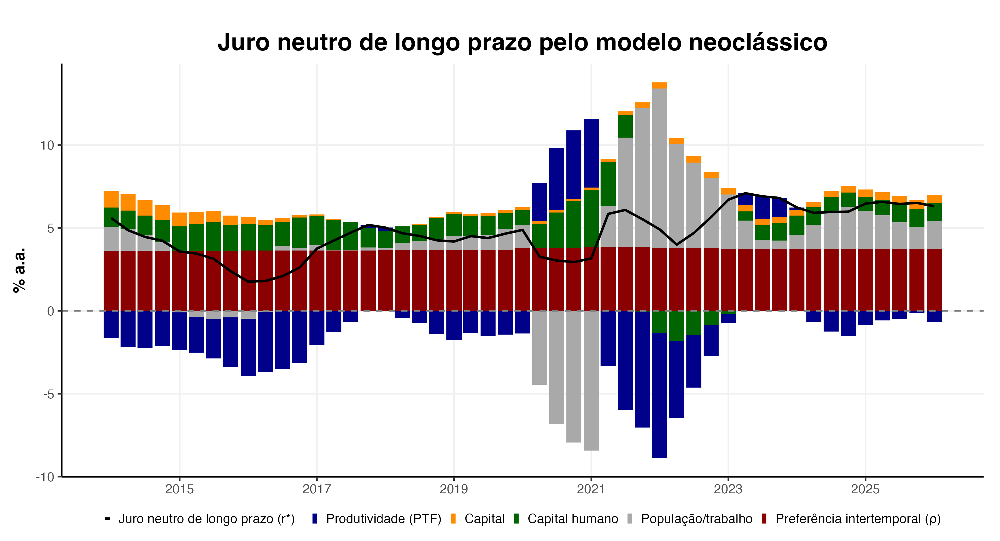

Por que os bancos centrais anunciam uma meta — e o que isso muda na forma como a política monetária é conduzida.
Da âncora na moeda ao combate direto à inflação, e deste às metas de inflação — o Brasil adotou o regime atual em 1999.
Quatro peças: o anúncio formal de uma meta numérica (com banda de tolerância), a escolha de um índice de preços para medi-la, a escolha dos instrumentos para persegui-la — e a comunicação, que é tão central quanto as três primeiras.
O Conselho Monetário Nacional fixa a meta. O Banco Central e o Copom conduzem a política para persegui-la. A Selic é o instrumento.
As escolhas de famílias e empresas hoje dependem do que elas esperam para amanhã. Se o mercado antecipa uma política contracionista, os preços e contratos já se ajustam antes de qualquer decisão ser anunciada.
O regime de metas é um arcabouço, não uma regra fixa. A regra de Taylor descreve como o juro reage à inflação e ao hiato do produto; o princípio de Taylor prescreve: a resposta deve ser mais que proporcional aos desvios da inflação.
Bernanke (2004), sobre o regime de metas de inflação
Preço e quantidade sobem juntos: choque de demanda. Preço sobe e quantidade cai: choque de oferta. A mesma lógica, em espelho, para quedas de preço. Distinguir os dois é o que orienta a comunicação do Copom — nem toda alta de inflação pede a mesma resposta de juros.
Expectativas de mercado (Focus), atas e comunicados do Copom, Relatório de Política Monetária — cada canal ancora expectativas e reduz a incerteza sobre a trajetória futura dos juros.
As decisões de hoje são moldadas pelo que se espera do amanhã.
O canal das expectativas — Chari (2000)
it = πt + r* + θπ(πt − π*) + θY(Yt − Ȳt)

Por que o Copom raramente muda de rota de forma abrupta — e o que isso implica para o formato da resposta da política monetária.
Na prática, a variabilidade da Selic é muito menor do que uma regra de política monetária "pura" prescreveria. A primeira razão é a incerteza — sobre os efeitos da própria política monetária, e sobre choques futuros ainda desconhecidos (guerras, crises externas, choques tarifários).
Imagine um Copom que sobe os juros em uma reunião e reduz na seguinte, de forma sistemática. Os agentes antecipariam o padrão, e o próprio aumento poderia perder efeito. Gradualismo reduz a frequência de correções de rota.
Os juros afetam o preço dos ativos, e os bancos podem estar mais expostos a movimentos bruscos do que o desejável do ponto de vista da estabilidade do sistema financeiro.
Uma regra de Taylor com duas defasagens, estimada no Relatório de Inflação de jun/2024 — quase toda a inércia vem do próprio juro passado; só uma fração do peso responde à inflação e à atividade a cada período.
O mesmo choque de demanda transitório, sob três comportamentos: sem suavização, com uma defasagem, e com as duas defasagens estimadas pelo BCB. Sem suavização, a resposta do juro é imediata e forte. Com duas defasagens, a resposta inicial é mais fraca, mas o pico chega mais tarde — e mais alto.
Incerteza sobre os efeitos — e sobre o que ainda pode acontecer.
Reversões de rota corroem a própria eficácia da decisão.
Juros movem preços de ativos — e a exposição dos bancos a eles.
it = θ₁it-1 + θ₂it-2 + (1−θ₁−θ₂)[rteq+πmeta+θ₃(πte−πmeta)]
Regra de Taylor com duas defasagens — Relatório de Inflação, jun/2024

Se a política monetária é contracionista ou expansionista sempre em relação a alguma referência, qual é essa referência?
O juro neutro é a taxa real consistente, no médio prazo, com a inflação na meta e o produto crescendo no seu potencial (Blinder, 1998). É uma variável não observável — só pode ser estimada, nunca lida diretamente nos dados.
O método de Roberts (2018): parte de uma curva IS estilizada relacionando o hiato do produto ao juro real, e resolve para a taxa que levaria esse hiato a zero — usando o hiato do produto do próprio Relatório de Política Monetária do BCB e a taxa real ex-ante do Focus.
A linha vermelha é a taxa real observada; a preta, o juro neutro estimado. Onde a vermelha fica acima da preta, a política monetária está sendo conduzida de forma contracionista em relação ao neutro.
A taxa consistente com a meta e com o produto potencial.
Blinder (1998)
hiatot = ρ·hiatot-1 − β·(rt − rtneutro)

Crédito e política fiscal também influenciam a demanda agregada — e isso é crucial para a transmissão da política monetária.
A metodologia de Biggs, Mayer e Pick (2010) mede a aceleração do crédito como proporção do PIB — não o seu nível, nem sua taxa de crescimento. É a variação da variação.
A metodologia do FMI mede a variação do resultado primário estrutural — já descontado o componente cíclico ligado ao hiato do produto. Impulso positivo é postura fiscal expansionista.


Crédito, fiscal e política monetária se coordenam ou agem cada um por conta própria?
Geralmente, os estímulos não estão na mesma direção. Lembrando ser apenas uma correlação (negativa).
E quando a política monetária está mais restritiva do que o neutro, o impulso fiscal reage — compensando ou reforçando o aperto?


Além do ciclo, o modelo neoclássico de crescimento fixa um valor de longo prazo — e ele tem quatro motores estruturais.
No modelo neoclássico, o juro de estado estacionário é resultado de dois pilares: a taxa de desconto intertemporal (ρ) e o crescimento potencial de longo prazo (g).
Contabilidade do crescimento à la Cobb-Douglas: produtividade total dos fatores, capital (via estoque construído por inventário perpétuo), capital humano e população/trabalho.
Blanchard (1985) / Yaari: quanto maior o risco de mortalidade em um período, maior o desconto efetivo do futuro. Com a taxa bruta de mortalidade do Brasil subindo à medida que a população envelhece, ρ sobe lentamente ao longo da amostra.
O juro neutro de longo prazo decomposto em seus quatro motores. A produtividade total dos fatores, o crescimento do estoque de capital físico, o crescimento do estoque de capital humano e a taxa de desconto intertemporal (influenciada pelas mudanças demográficas).
r* = ρ + θ·g
Equação de Euler, modelo neoclássico de crescimento
g = gPTF + α·gK + (1−α)·(gpop + gh)
Mais risco de mortalidade hoje, mais desconto do futuro.
Blanchard (1985) · Yaari
